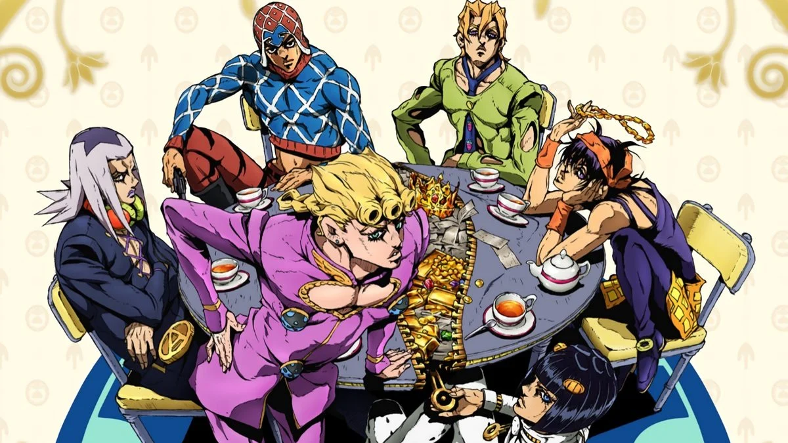
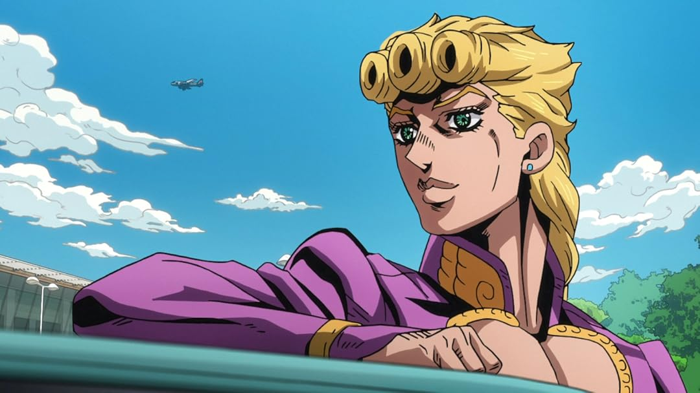

JoJo's Bizarre Adventure
Vento Aureo (黄金の風 Ōgon no Kaze), traduzido em inglês como Golden Wind é a quinta parte de JoJo's Bizarre Adventure, serializada na Weekly Shōnen Jump de dezembro de 1995 a abril de 1999. O arco abrange um total de 155 capítulos e ocorre após Diamond is Unbreakable.
Resumo
Em 2001, Koichi Hirose chega a Nápoles em busca de uma amostra de pele de um jovem chamado Haruno Shiobana. Jotaro Kujo suspeita que Haruno seja filho de Dio Brando, concebido com o corpo de Jonathan Joestar antes dos eventos de Stardust Crusaders. Koichi logo conhece e é enganado por Haruno, agora conhecido pelo nome de Giorno Giovanna, cujo Stand Gold Experience pode criar formas de vida e curar ferimentos. Depois de derrotar um mafioso empunhando Stand chamado Bruno Bucciarati, que foi enviado para vingar o ferimento que Giorno infligiu a um membro de uma gangue, o jovem conquista Bucciarati ao revelar seu sonho de se tornar um chefe da máfia para melhorar Nápoles e acabar com o flagelo do tráfico de drogas que assola a juventude da cidade. Bucciarati concorda em introduzir Giorno na organização Passione, permitindo que Giorno faça um teste de iniciação do capo Polpo, com obesidade mórbida. Depois de convencer Koichi a encerrar sua investigação, Giorno passa no teste, mas indiretamente mata Polpo como vingança pela morte de um espectador inocente.
Giorno é colocado no grupo de Bucciarati, que consiste nos colegas usuários do Stand Guido Mista, Leone Abbacchio, Narancia Ghirga e Pannacotta Fugo. O aparente suicídio de Polpo oferece uma oportunidade para Bucciarati alcançar o posto de capo ao doar a fortuna acumulada de Polpo na ilha de Capri para um representante de uma gangue. Bucciarati recebe então a missão final de Polpo: o chefe de Passione, uma figura misteriosa cuja identidade é desconhecida até mesmo por seus subordinados, solicita que sua filha adolescente Trish Una seja levada em segurança até ele em Veneza. Ao longo do caminho, a equipe de Bucciarati elimina todos, exceto um dos membros do traiçoeiro Time de Assassinos de Passione, que procuram usar Trish como um meio de identificar e derrotar o chefe. Por ordem do chefe, obtenha a chave e use-o para acessar a sala dentro da tartaruga Coco Jumbo usando o Stand.
Depois de chegar a Veneza em segurança e escoltar Trish até a Igreja de San Giorgio Maggiore, Bucciarati percebe que o chefe pretende matar a própria filha para manter seu anonimato. Um Bucciarati enfurecido persegue o chefe para salvar Trish, mas sofre ferimentos graves nas mãos do invencível Stand King Crimson do chefe, que tem a habilidade de ver e pular a progressão do tempo vários segundos no futuro. Bucciarati mal consegue escapar com Trish antes de falecer, mas a intervenção de Giorno imbui Bucciarati com energia vital suficiente para persistir após sua morte biológica. Apesar das objeções de Fugo, o resto do grupo abandona Passione e promete descobrir a identidade do chefe para derrotá-lo.
O grupo de Bucciarati viaja para a ilha da Sardenha depois que Trish a lembra como o local de nascimento do chefe, na esperança de permitir que o Stand de Abbacchio descubra a identidade do chefe. No entanto, o chefe chega primeiro à Sardenha sob o disfarce de sua personalidade alternativa, Vinegar Doppio, e rapidamente mata Abbacchio. O grupo de Bucciarati é então contatado por um terceiro, que revela que o nome do chefe é Diavolo e solicita que o grupo visite o Coliseu de Roma para receber uma Flecha especial. O grupo chega a Roma, mas Diavolo explora os sentidos enfraquecidos de Bucciarati para chegar primeiro ao informante, revelando que ele é Jean Pierre Polnareff. Diavolo fere Polnareff fatalmente, forçando-o a esfaquear seu Stand Silver Chariot com a Flecha. Fazer isso evolui o Stand para Chariot Requiem, que enlouquece e usa sua habilidade para trocar as almas dos seres vivos pela cidade.
Polnareff, agora dentro do corpo da tartaruga, explica a Flecha e seu Stand para o grupo, que percebe que seus próprios Stands irão atacá-los se eles se aproximarem da Flecha. O grupo paralisa o corpo de Bucciarati quando ele desperta, mas King Crimson elimina Narancia enquanto Doppio morre dentro do cadáver de Bucciarati. Diavolo logo é forçado a se revelar, mas consegue ferir letalmente a alma de Trish e enfraquecer Requiem. No último momento, Bucciarati se sacrifica para dissipar a troca de almas, salvar Trish e passar a Flecha para Giorno. Usando a Flecha, Giorno evolui seu Stand para Gold Experience Requiem. Giorno então usa sua nova habilidade para reverter o ataque de Diavolo contra ele e condenar o chefe a vivenciar várias situações fatais por toda a eternidade.
O trio sobrevivente retorna ao Coliseu, enquanto Trish e Mista permanecem sem saber da morte de Bucciarati. No caminho, eles encontram Coco Jumbo, com o fantasma de Polnareff sobrevivendo dentro de seu Stand. Honrando os sacrifícios de seus aliados, Giorno e Polnareff concordam em preservar a Flecha. Algum tempo depois, Giorno se torna o novo chefe da Passione, com Mista e Polnareff ao seu lado.